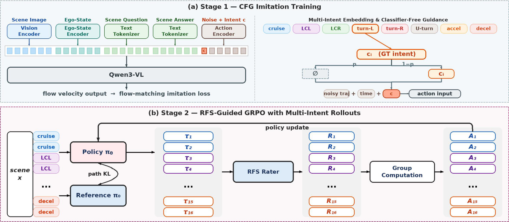
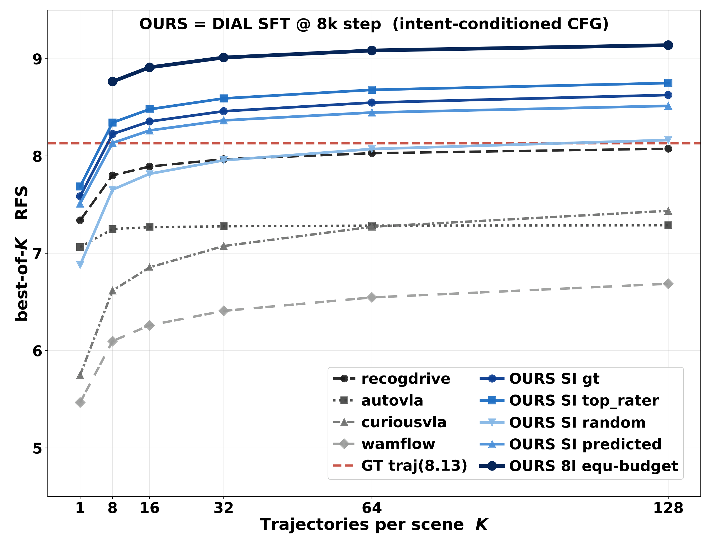
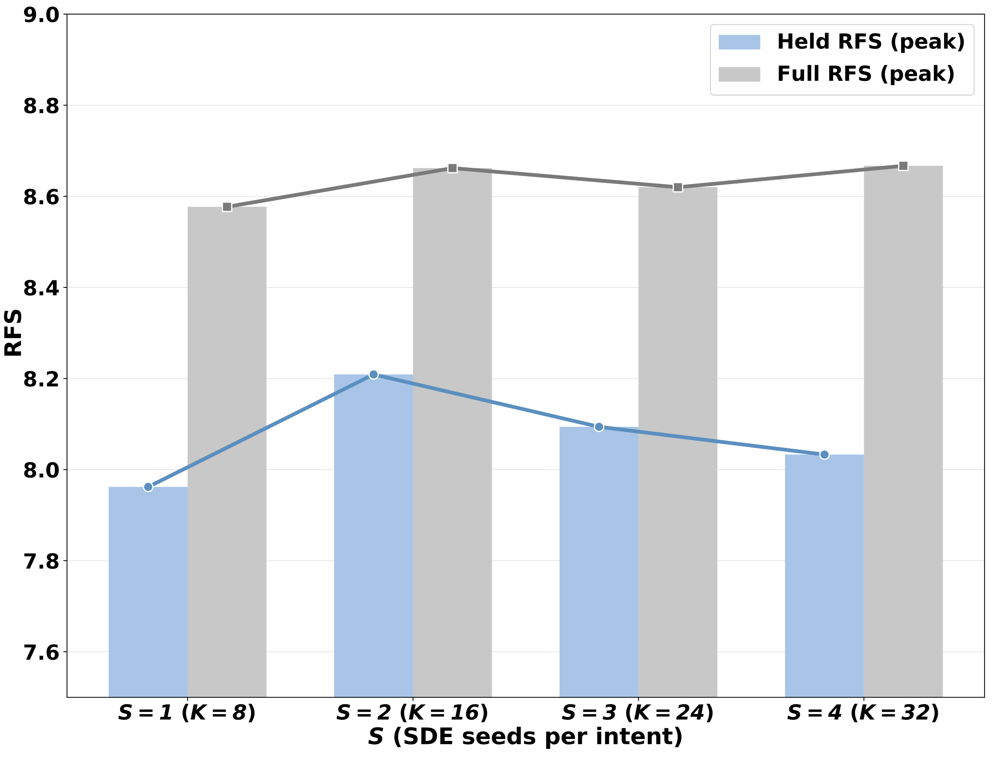
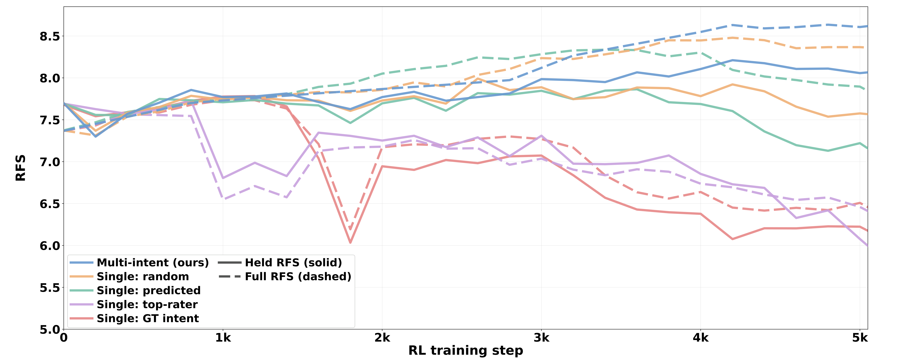

What Problem Are We Solving?
Driving logs show what one human driver did, not the only safe or best action the car could take. Standard imitation models learn to copy that single logged path and often collapse around it, missing other reasonable maneuvers such as yielding earlier, changing lanes, or braking more smoothly. DIAL first asks the policy to propose different intent-level maneuvers, then learns which proposals human raters prefer.
Method
DIAL is built on MindVLA-U1. During imitation training, the action generator receives one of eight rule-derived intents: cruise, lane change left or right, turn left or right, U-turn, accelerate, or decelerate. Classifier-free dropout teaches both conditional and unconditional action distributions. During RL, each scene contributes an intent-balanced proposal group, so group-relative advantages compare maneuver-level alternatives instead of small coordinate perturbations around a single logged path.

Intent-CFG Proposal Ceiling
The central diagnosis is that ordinary stochastic samples from single-demonstration SFT policies do not reach enough maneuver basins. Baseline VA and VLA policies saturate below the logged human-driven trajectory at K=128. Intent-conditioned proposals cross the logged-trajectory reference around K=8, and all-intent pooling reaches the strongest ceiling.


Planning-Oriented RL Results
Under a controlled Waymo-only task-training protocol, DIAL obtains the strongest held-out improvement among the RL-trained systems reported in the paper. Each peak is compared against the step-0 evaluation from the same RL stage.
| Model | Action Representation | Stage | Held RFS ↑ | Delta RL | TR ↑ | Full RFS ↑ |
|---|---|---|---|---|---|---|
| WAM-Flow | discrete flow | SFT init | 5.547 | -- | 24.0% | 5.757 |
| WAM-Flow | discrete flow | RL peak | 5.634 | +0.087 | 19.0% | 6.111 |
| Curious-VLA | action token | SFT init | 5.808 | -- | 30.0% | 5.827 |
| Curious-VLA | action token | RL peak | 5.954 | +0.146 | 31.0% | 7.157 |
| AutoVLA | action token | SFT init | 6.744 | -- | 46.0% | 6.809 |
| AutoVLA | action token | RL peak | 6.787 | +0.043 | 47.0% | 6.780 |
| ReCogDrive | DiT diffusion | SFT init | 7.399 | -- | 58.0% | 7.244 |
| ReCogDrive | DiT diffusion | RL peak | 7.714 | +0.315 | 65.4% | 7.543 |
| DIAL | continuous flow | SFT init | 7.696 | -- | 54.7% | 7.369 |
| DIAL | continuous flow | RL peak | 8.211 | +0.515 | 68.0% | 8.631 |
Multi-Intent vs Single-Intent GRPO
Holding the per-scene rollout budget fixed at K=16, the main DIAL configuration spans all eight intent classes. Single-intent variants keep the same sample count but condition all rollouts on one selected intent. The multi-intent group reaches the highest held-out RFS and avoids the sharper post-peak collapse seen in single-intent recipes.
| Group Composition | C | S | K | Held Peak ↑ | TR ↑ | Full RFS ↑ |
|---|---|---|---|---|---|---|
| single gt, geometric | 1 | 16 | 16 | 7.783 | 65.0% | 7.733 |
| single predicted, classifier | 1 | 16 | 16 | 7.864 | 57.0% | 8.331 |
| single top-rater, leakage | 1 | 16 | 16 | 7.728 | 61.0% | 7.545 |
| single random, uniform | 1 | 16 | 16 | 7.992 | 64.0% | 8.035 |
| multi-intent DIAL main | 8 | 2 | 16 | 8.211 | 68.0% | 8.631 |
Diversity Preservation
The diversity analysis shows why the multi-intent group matters. DIAL keeps the largest RFS spread across intent-conditioned trajectories after RL, meaning different intents continue to produce quality-differentiated proposals. The training curves also show that DIAL peaks higher and declines less than single-intent variants.
| Sampling | D1 (m) | D2 | D3@1 | D3@16 | Gap |
|---|---|---|---|---|---|
| SFT init, no RL | 6.43 | 0.52 | 4.387 | 6.617 | +2.23 |
| DIAL, multi-intent | 4.17 | 0.75 | 4.500 | 6.540 | +2.04 |
| Single: random | 2.40 | 0.43 | 4.381 | 6.231 | +1.85 |
| Single: predicted | 4.82 | 0.64 | 4.372 | 6.172 | +1.80 |
| Single: top-rater | 7.08 | 0.65 | 4.240 | 6.020 | +1.78 |
| Single: GT intent | 6.02 | 0.59 | 4.229 | 5.889 | +1.66 |

BibTeX
@article{lu2026drivingintents,
title={Driving Intents Amplify Planning-Oriented Reinforcement Learning},
author={Hengtong Lu and Victor Shea-Jay Huang and Chengmin Yang and Pengfei Jing and Jifeng Dai and Xie Yan and Benjin Zhu},
journal={arXiv preprint arXiv:2605.12625},
year={2026}
}